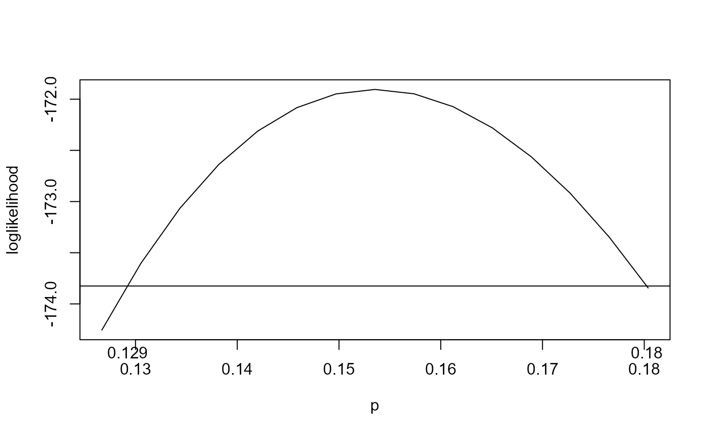
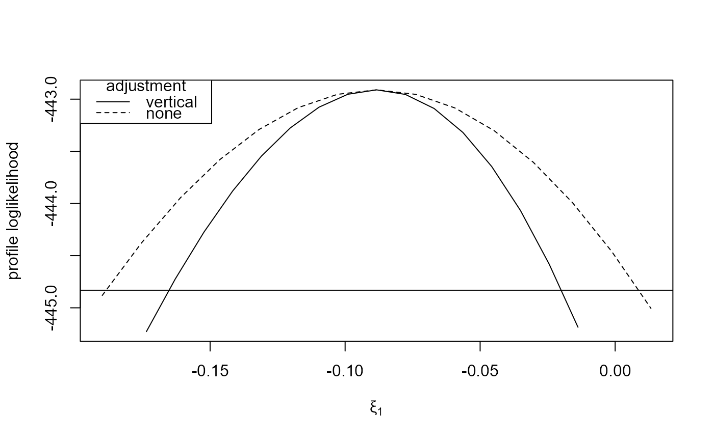

Calculates confidence intervals for individual parameters.
conf_intervals(
object,
which_pars = NULL,
init = NULL,
conf = 95,
mult = 1.5,
num = 10,
type = c("vertical", "cholesky", "spectral", "none"),
profile = TRUE,
...
)An object of class "chandwich" returned by
adjust_loglik.
A vector specifying the (unfixed) parameters for which
confidence intervals are required. Can be either a numeric vector,
specifying indices of the components of the full parameter
vector, or a character vector of parameter names, which must be a subset
of those supplied in par_names in the call to
adjust_loglik that produced object.
which_pars must not have any parameters in common with
attr(object, "fixed_pars"). which_pars must not contain
all of the unfixed parameters, i.e. there is no point in profiling over
all the unfixed parameters.
If missing, all parameters are included.
A numeric vector of initial estimates of the values of the
parameters that are not fixed and are not in which_pars.
Should have length attr(object, "p_current") - length(which_pars).
If init is NULL or is of the wrong length then the
relevant components from the MLE stored in object are used.
A numeric scalar in (0, 100). Confidence level for the intervals.
A numeric vector of length 1 or the same length as
which_pars.
The search for the profile loglikelihood-based confidence limits is
conducted over the corresponding symmetric confidence intervals
(based on approximate normal theory), extended
by a factor of the corresponding component of mult.
A numeric scalar. The number of values at which to evaluate the
profile loglikelihood either side of the MLE. Increasing num
increases the accuracy of the confidence limits, but the code will take
longer to run.
A character scalar. The argument type to the function
returned by adjust_loglik, that is, the type of adjustment
made to the independence loglikelihood function.
A logical scalar. If FALSE then only intervals based
on approximate large sample normal theory, which are symmetric about the
MLE, are returned (in sym_CI) and prof_CI in the returned
object will contain NAs.
Further arguments to be passed to optim.
These may include gr, method, lower, upper
or control.
An object of class "confint", a list with components
The argument conf.
A numeric scalar. For values inside the
confidence interval the profile loglikelihood lies above
cutoff.
2 * num + 1 by
length(which_pars) numeric matrices.
Column i of parameter_vals contains the profiled values of
parameter which_par[i]. Column i of prof_loglik_vals
contains the corresponding values of the profile loglikelihood.
length(which_pars)
by 2 numeric matrices. Row i of sym_CI (prof_CI)
contains the symmetric (profile loglikelihood-based) confidence
intervals for parameter which_pars[i].
If a value in
prof_CI is NA then this means that the search for the
confidence limit did no extend far enough. A remedy is to increase
the value of mult, or the relevant component of mult,
and perhaps also increase num.
The value of the adjusted loglikelihood
at its maximum, stored in object$max_loglik.
The argument type supplied in the call
to conf_intervals, i.e. the type of loglikelihood adjustment.
The argument which_pars.
A character scalar. The name of the model,
stored in attr(object, "name").
The number of free parameters in the current model.
attr(object, "fixed_pars") and
attr(object, "fixed_at"), the arguments fixed_pars and
fixed_at to adjust_loglik, if these were
supplied.
Calculates (profile, if necessary) likelihood-based confidence
intervals for individual parameters, and also provides symmetric intervals
based on a normal approximation to the sampling distribution of the
estimator. See also the S3 confint method
confint.chandwich.
confint.chandwich S3 confint method for objects
of class "chandwich" returned from adjust_loglik.
adjust_loglik to adjust a user-supplied
loglikelihood function.
summary.chandwich for maximum likelihood estimates
and unadjusted and adjusted standard errors.
plot.chandwich for plots of one-dimensional adjusted
loglikelihoods.
conf_region for a confidence region for
a pair of parameters.
compare_models to compare nested models using an
(adjusted) likelihood ratio test.
# ------------------------- Binomial model, rats data ----------------------
# Contributions to the independence loglikelihood
binom_loglik <- function(prob, data) {
if (prob < 0 || prob > 1) {
return(-Inf)
}
return(dbinom(data[, "y"], data[, "n"], prob, log = TRUE))
}
rat_res <- adjust_loglik(loglik = binom_loglik, data = rats, par_names = "p")
# 95% likelihood-based confidence intervals, vertically adjusted
ci <- conf_intervals(rat_res)
#> Waiting for profiling to be done...
plot(ci)

# Unadjusted
conf_intervals(rat_res, type = "none")
#> Waiting for profiling to be done...
#> Model: binom_loglik
#>
#> 95% confidence interval, independence loglikelihood
#>
#> Symmetric:
#> lower upper
#> p 0.1366 0.1705
#>
#> Likelihood-based:
#> lower upper
#> p 0.1372 0.1710
# -------------------------- GEV model, owtemps data -----------------------
# ------------ following Section 5.2 of Chandler and Bate (2007) -----------
gev_loglik <- function(pars, data) {
o_pars <- pars[c(1, 3, 5)] + pars[c(2, 4, 6)]
w_pars <- pars[c(1, 3, 5)] - pars[c(2, 4, 6)]
if (isTRUE(o_pars[2] <= 0 | w_pars[2] <= 0)) return(-Inf)
o_data <- data[, "Oxford"]
w_data <- data[, "Worthing"]
check <- 1 + o_pars[3] * (o_data - o_pars[1]) / o_pars[2]
if (isTRUE(any(check <= 0))) return(-Inf)
check <- 1 + w_pars[3] * (w_data - w_pars[1]) / w_pars[2]
if (isTRUE(any(check <= 0))) return(-Inf)
o_loglik <- log_gev(o_data, o_pars[1], o_pars[2], o_pars[3])
w_loglik <- log_gev(w_data, w_pars[1], w_pars[2], w_pars[3])
return(o_loglik + w_loglik)
}
# Initial estimates (method of moments for the Gumbel case)
sigma <- as.numeric(sqrt(6 * diag(var(owtemps))) / pi)
mu <- as.numeric(colMeans(owtemps) - 0.57722 * sigma)
init <- c(mean(mu), -diff(mu) / 2, mean(sigma), -diff(sigma) / 2, 0, 0)
# Log-likelihood adjustment of the full model
par_names <- c("mu[0]", "mu[1]", "sigma[0]", "sigma[1]", "xi[0]", "xi[1]")
large <- adjust_loglik(gev_loglik, data = owtemps, init = init,
par_names = par_names)
# 95% likelihood-based confidence intervals, vertically adjusted
large_v <- conf_intervals(large, which_pars = c("xi[0]", "xi[1]"))
#> Waiting for profiling to be done...
large_v
#> Model: gev_loglik
#>
#> 95% confidence intervals, adjusted loglikelihod with type = ''vertical''
#>
#> Symmetric:
#> lower upper
#> xi[0] -0.27623 -0.12166
#> xi[1] -0.15939 -0.01731
#>
#> Profile likelihood-based:
#> lower upper
#> xi[0] -0.27410 -0.11572
#> xi[1] -0.16519 -0.02002
plot(large_v)
plot(large_v, which_par = "xi[1]")
# \donttest{
# Unadjusted
large_none <- conf_intervals(large, which_pars = c("xi[0]", "xi[1]"),
type = "none")
#> Waiting for profiling to be done...
large_none
#> Model: gev_loglik
#>
#> 95% confidence intervals, independence loglikelihood
#>
#> Symmetric:
#> lower upper
#> xi[0] -0.295708 -0.102188
#> xi[1] -0.185107 0.008412
#>
#> Profile likelihood-based:
#> lower upper
#> xi[0] -0.289574 -0.094328
#> xi[1] -0.188502 0.008628
plot(large_v, large_none)
plot(large_v, large_none, which_par = "xi[1]")

# }
# --------- Misspecified Poisson model for negative binomial data ----------
# ... following Section 5.1 of the "Object-Oriented Computation of Sandwich
# Estimators" vignette of the sandwich package
# https://cran.r-project.org/web/packages/sandwich/vignettes/sandwich-OOP.pdf
# Simulate data
set.seed(123)
x <- rnorm(250)
y <- rnbinom(250, mu = exp(1 + x), size = 1)
# Fit misspecified Poisson model
fm_pois <- glm(y ~ x + I(x^2), family = poisson)
summary(fm_pois)$coefficients
#> Estimate Std. Error z value Pr(>|z|)
#> (Intercept) 1.06326821 0.04135723 25.709367 9.184267e-146
#> x 0.99607219 0.05353446 18.606186 2.862861e-77
#> I(x^2) -0.04912373 0.02314608 -2.122335 3.380961e-02
# Contributions to the independence loglikelihood
pois_glm_loglik <- function(pars, y, x) {
log_mu <- pars[1] + pars[2] * x + pars[3] * x ^ 2
return(dpois(y, lambda = exp(log_mu), log = TRUE))
}
pars <- c("alpha", "beta", "gamma")
pois_quad <- adjust_loglik(pois_glm_loglik, y = y, x = x, par_names = pars)
conf_intervals(pois_quad)
#> Waiting for profiling to be done...
#> Model: pois_glm_loglik
#>
#> 95% confidence intervals, adjusted loglikelihod with type = ''vertical''
#>
#> Symmetric:
#> lower upper
#> alpha 0.89907 1.22747
#> beta 0.78986 1.20231
#> gamma -0.12024 0.02199
#>
#> Profile likelihood-based:
#> lower upper
#> alpha 0.8954 1.2232
#> beta 0.7877 1.1991
#> gamma -0.1198 0.0222